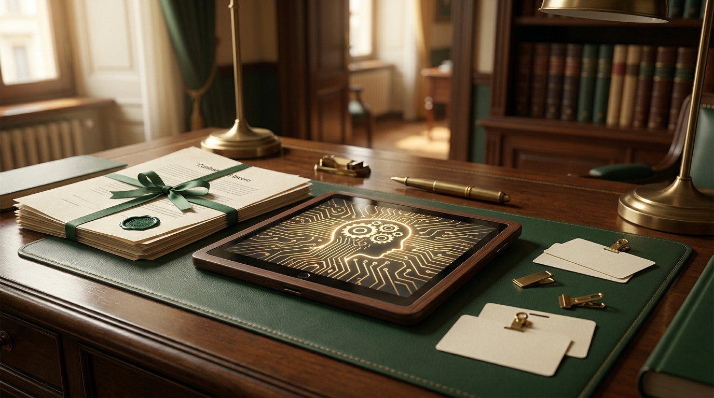

Intelligenza artificiale e lavoro: nuovi obblighi tra AI Act, GDPR e Statuto dei lavoratori
Il Governo ha avviato l'attuazione del Regolamento europeo sull'IA e della legge nazionale in materia. Per i datori di lavoro si profilano nuovi obblighi su sicurezza, trasparenza e controllo umano dei sistemi automatizzati. Il tema non nasce dal nulla: si innesta su norme già vigenti come l'art. 4 dello Statuto dei lavoratori e l'art. 22 del GDPR. Conviene capire come si coordinano.

Il contesto normativo
Il quadro si muove su due piani che vanno letti insieme.
Il primo è europeo: il Regolamento (UE) 2024/1689 (cosiddetto AI Act) classifica come «ad alto rischio» diversi sistemi di intelligenza artificiale impiegati in ambito lavorativo. L'Allegato III, punto 4, include i sistemi destinati al reclutamento e alla selezione del personale, alle decisioni su promozioni e cessazioni, all'assegnazione dei compiti e al monitoraggio delle prestazioni. Per questi sistemi l'art. 14 impone una sorveglianza umana effettiva (human oversight): una persona deve poter comprendere il funzionamento del sistema, interpretarne gli esiti e, se necessario, intervenire o disattivarlo.
Il secondo piano è nazionale. La legge 23 settembre 2025, n. 132, recante disposizioni e deleghe in materia di intelligenza artificiale, fissa principi generali e delega il Governo all'adozione dei decreti attuativi. In sede di Consiglio dei ministri sono stati avviati i provvedimenti che coinvolgono, tra gli altri, i Ministeri del Lavoro, dell'Interno, della Giustizia e dell'Istruzione. Allo stato, alcune misure restano in fase di definizione: occorre attendere il testo definitivo dei decreti prima di trarne conclusioni operative puntuali.
Tre profili da tenere distinti
Responsabilità civile. Chi adotta un sistema di IA per gestire o monitorare il lavoro risponde delle decisioni che ne derivano. L'automazione non sposta la responsabilità sul software: la concentra sul datore di lavoro che ha scelto di adottarlo e su come lo ha configurato. Eventuali errori discriminatori in fase di selezione o di valutazione restano imputabili all'organizzazione.
Limiti all'uso autonomo. Qui il coordinamento normativo è decisivo. L'art. 22 del GDPR (Reg. UE 2016/679) vieta, di regola, decisioni basate unicamente su trattamenti automatizzati che producano effetti giuridici significativi sulla persona. In ambito lavorativo questo significa che un licenziamento, una mancata assunzione o una sanzione non possono fondarsi sul solo output di un algoritmo. L'art. 14 dell'AI Act rafforza la stessa logica imponendo il controllo umano. A monte, il d.lgs. 104/2022 (cosiddetto decreto trasparenza), con l'art. 1-bis introdotto nel d.lgs. 152/1997, obbliga il datore a informare lavoratori e rappresentanze sindacali sull'uso di sistemi decisionali o di monitoraggio automatizzati.
La lettura combinata è chiara: trasparenza preventiva (d.lgs. 104/2022), intervento umano garantito (art. 14 AI Act) e divieto di decisione esclusivamente automatizzata (art. 22 GDPR) formano un unico presidio. Mancare uno solo di questi passaggi espone l'atto a contestazione.
Profilo penale e sanzionatorio. Secondo le bozze in discussione, i decreti attuativi introdurrebbero ipotesi sanzionatorie per l'impiego illecito di sistemi di IA, anche a tutela della sicurezza. In attesa del testo definitivo è prudente non indicare fattispecie precise. Resta fin d'ora rilevante il d.lgs. 81/2008 sulla salute e sicurezza: l'introduzione di tecnologie che incidono sull'organizzazione del lavoro rientra negli obblighi di valutazione dei rischi a carico del datore.
Il nodo del controllo a distanza
Molti sistemi di IA monitorano la prestazione lavorativa. Scatta allora l'art. 4 della legge 300/1970 (Statuto dei lavoratori): gli strumenti da cui derivi un controllo a distanza dell'attività possono essere installati solo per esigenze organizzative, produttive, di sicurezza o tutela del patrimonio, previo accordo con le rappresentanze sindacali o autorizzazione dell'Ispettorato del lavoro. L'informazione e il coinvolgimento sindacale non sono un adempimento formale: sono presupposto di legittimità dell'utilizzo.
Implicazioni pratiche
Per l'impresa significa rivedere processi già in uso. Un software di screening dei curriculum, un sistema di assegnazione turni o uno strumento di valutazione delle performance possono ricadere contemporaneamente nell'Allegato III dell'AI Act, nell'art. 22 GDPR e nell'art. 4 dello Statuto. Tre discipline, un solo presidio organizzativo da costruire.
Cosa fare in concreto
- Mappare i sistemi di IA già adottati o in valutazione, verificando se rientrano tra quelli ad alto rischio dell'Allegato III dell'AI Act.
- Garantire il controllo umano su ogni decisione che incida su assunzione, valutazione, sanzione o cessazione del rapporto, evitando automatismi esclusivi.
- Adempiere agli obblighi informativi del d.lgs. 104/2022 verso lavoratori e rappresentanze sindacali prima dell'avvio del sistema.
- Formalizzare accordo sindacale o autorizzazione dell'Ispettorato ai sensi dell'art. 4 St. Lav. quando il sistema comporta controllo a distanza.
- Aggiornare il documento di valutazione dei rischi ex d.lgs. 81/2008 e monitorare l'evoluzione dei decreti attuativi.
L'automazione non cancella la responsabilità: la concentra su chi sceglie di adottarla.
---
*Contributo informativo a cura di Tamburro & Partners - Avv. Giuseppe Tamburro. Non costituisce parere legale.*
Ogni storia di lavoro ha i suoi tempi.
Se gestisci HR e vuoi un confronto su contenzioso, ispezioni o licenziamenti, scrivi allo studio. Ti rispondiamo entro un giorno lavorativo.